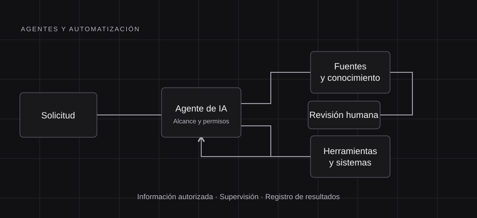

Data Engineering
- Arquitectura de datos
- ETL/ELT y pipelines
- Modelado y optimización de datos
- Integración de fuentes
Data Engineering · Artificial Intelligence · Business
Transformando datos e inteligencia artificial en soluciones que generan valor.
ABOUT
Soy Helton Lirion, un profesional especializado en ingeniería de datos e inteligencia artificial. Me interesa transformar problemas complejos en soluciones tecnológicas que generen valor.
Combino pensamiento analítico, aprendizaje continuo y visión de negocios, guiado por la innovación, la excelencia y la búsqueda de un impacto útil.
EXPERTISE
PROJECTS
Arquitecturas propuestas para conectar datos, inteligencia artificial y negocio.

Data Engineering & Cloud
Diseño de una arquitectura Medallion con capas Bronze, Silver y Gold, orientada al consumo analítico y Data Science.
Explore Solution
Artificial Intelligence & Automation
Diseño de una solución basada en agentes de inteligencia artificial para automatizar tareas, integrar información y apoyar procesos de negocio.
Explore Solution